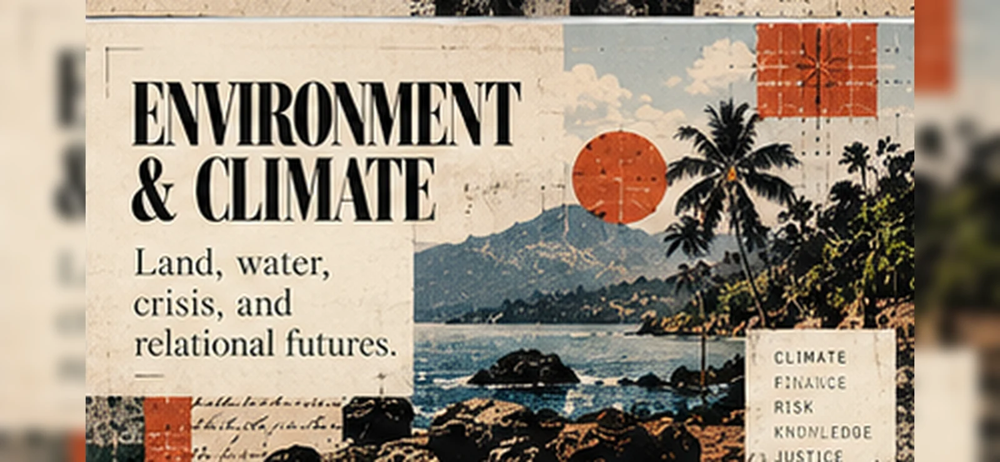

Know the risk
Weather, ecosystems, spatial data, exposure, uncertainty, warning thresholds and community knowledge.
Enter this record ↗Climate action is not only a problem of inadequate information or finance. It is also a question of how knowledge, authority, resources, ecosystems and implementation arrange the conditions of vulnerability and repair.
Weather, ecosystems, spatial data, exposure, uncertainty, warning thresholds and community knowledge.
Enter this record ↗Permissions, public authority, engineering, land use, planning, capacity and long-term maintenance.
Enter this record ↗Debt, investment, insurance, household vulnerability, labour and which losses remain uncounted.
Enter this record ↗Practitioner observations concerning Caribbean climate projects are research starting points, not proof of a general causal theory of vulnerability.
A baseline changes after a hurricane. An approval process restarts. An intervention remains a pilot. Local ecosystems are incompletely represented. What part of the delay or failure follows from missing information, and what part from the ways knowledge, problems and resources are organized?
Conjuration must trace these distinctions through particular projects: documentation, local testimony where consent exists, risk models, decisions, approvals and actual implementation. A finance instrument that pays out as intended is not evidence that all climate vulnerability has been repaired.
AI may assist weather prediction, sensing, ecological mapping or energy-system planning. Meanwhile, data centres require electricity, water, land, chips and labour. Morrow investigates both the benefits of particular technical applications and the costs of their production.
Neither the environmental benefit nor the environmental burden of a single response is established by broad industry averages; unavailable measurements should be marked unknown.
Material Computation Ledger ↗